Guided Factor Analysis on All CD8+ T Cell CROP-seq Data
-- Deviance residual transformed + normal-mixture prior
Yifan Zhou (zhouyf@uchicago.edu)
2021-10-06
1 Single cell expression data
Source:
Genome-wide CRISPR Screens in Primary Human T Cells Reveal Key Regulators of Immune Function, GEO accession: GSE119450.
Perturbations:
CRISPR knock-out of 20 genes (2 gRNAs per gene) + 8 non-targeting gRNAs. Guide conditions were defined on the target gene level; target genes were either found to regulate T cell responses in the genome-wide screens, or known checkpoint genes.
Guide RNAs were introduced into T cells through a novel procedure called sgRNA lentiviral infection with Cas9 protein electroporation (SLICE).
Cells:
Primary human CD8+ T cells from two healthy donors, with and without T cell receptor (TCR) stimulation.
Cells from 2 donors were pooled together into 1 analysis. All cells have only a single type of gRNA readout. Quality control resulted in 24995 cells, including 5533 D1N, 6843 D1S, 5144 D2N, and 7435 D2S cells.
Genes:
Top 6000 genes ranked by the multinomial deviance statistics were kept.
Normalization:
Deviance residual transformation.
Donor batch was corrected for.
Unique UMI count, library size, and mitochondria percentage were all corrected for. The corrected and scaled expression data were used as input for subsequent factor analysis.
2 GSFA Results
Here, our "guide", \(G\) matrix, consists of 21 types (20 genes + negative control) of KO conditions across cells.
In each case, Gibbs sampling was conducted for 4000 iterations, and the posterior mean estimates were averaged over the last 1000 iterations.
Mainly showing the result using SVD initialization.
2.1 Local False Sign Rate (LFSR)
For a given GSFA inference result, we can estimate the effect a certain KO condition \(m\) has on the expression of gene \(j\) by computing the LFSR of \(\beta_{m\cdot} \cdot W_{j\cdot}\).
2.1.1 Stimulated group
Number of genes that passed GSFA LFSR < 0.05 under each perturbation:| KO | ARID1A | BTLA | C10orf54 | CBLB | CD3D | CD5 | CDKN1B |
| Num_genes | 397 | 0 | 0 | 417 | 0 | 613 | 527 |
| KO | DGKA | DGKZ | HAVCR2 | LAG3 | LCP2 | MEF2D | NonTarget |
| Num_genes | 0 | 3 | 0 | 0 | 402 | 0 | 420 |
| KO | PDCD1 | RASA2 | SOCS1 | STAT6 | TCEB2 | TMEM222 | TNFRSF9 |
| Num_genes | 0 | 363 | 595 | 0 | 499 | 0 | 0 |
| KO | ARID1A | BTLA | C10orf54 | CBLB | CD3D | CD5 | CDKN1B |
| Num_genes | 14 | 0 | 0 | 15 | 5 | 6 | 1 |
| KO | DGKA | DGKZ | HAVCR2 | LAG3 | LCP2 | MEF2D | NonTarget |
| Num_genes | 0 | 0 | 0 | 1 | 39 | 0 | 0 |
| KO | PDCD1 | RASA2 | SOCS1 | STAT6 | TCEB2 | TMEM222 | TNFRSF9 |
| Num_genes | 0 | 9 | 0 | 5 | 73 | 0 | 1 |
2.1.2 Unstimulated group
Number of genes that passed GSFA LFSR < 0.05 under each perturbation:| KO | ARID1A | BTLA | C10orf54 | CBLB | CD3D | CD5 | CDKN1B |
| Num_genes | 0 | 0 | 0 | 0 | 0 | 0 | 0 |
| KO | DGKA | DGKZ | HAVCR2 | LAG3 | LCP2 | MEF2D | NonTarget |
| Num_genes | 0 | 0 | 0 | 0 | 0 | 0 | 0 |
| KO | PDCD1 | RASA2 | SOCS1 | STAT6 | TCEB2 | TMEM222 | TNFRSF9 |
| Num_genes | 161 | 47 | 0 | 0 | 166 | 0 | 0 |
| KO | ARID1A | BTLA | C10orf54 | CBLB | CD3D | CD5 | CDKN1B |
| Num_genes | 5 | 1 | 1 | 8 | 1 | 0 | 1 |
| KO | DGKA | DGKZ | HAVCR2 | LAG3 | LCP2 | MEF2D | NonTarget |
| Num_genes | 0 | 0 | 0 | 0 | 1 | 1 | 0 |
| KO | PDCD1 | RASA2 | SOCS1 | STAT6 | TCEB2 | TMEM222 | TNFRSF9 |
| Num_genes | 2 | 0 | 0 | 1 | 30 | 0 | 0 |
2.2 Estimate of Factor ~ Perturbation Associations (\(\beta\))
2.2.1 Stimulated group
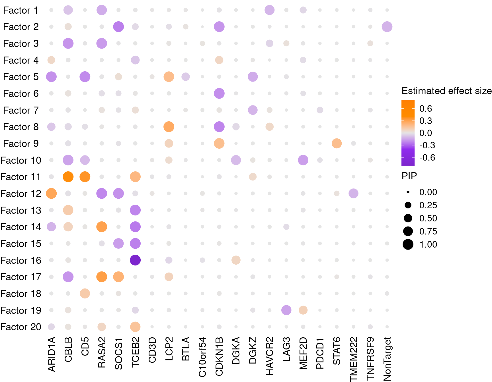
2.2.2 Unstimulated group
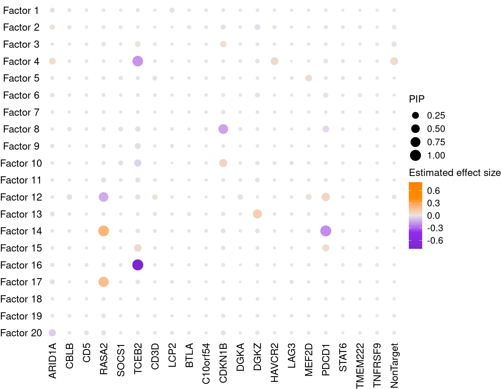
2.3 Factor ~ Perturbation Association P Values
2.3.1 Stimulated group
 Significant actor-guide associations:
Significant actor-guide associations:
2 - SOCS1; 3 - CBLB; 5 - CD5,LCP2; 8 - CDKN1B,LCP2; 11 - CBLB,CD5; 12 - ARID1A,RASA2,SOCS1; 13 - CBLB,TCEB2; 14 - RASA2,TCEB2; 15 - TCEB2; 16 - DGKA,TCEB2; 17 - CBLB,RASA2,SOCS1
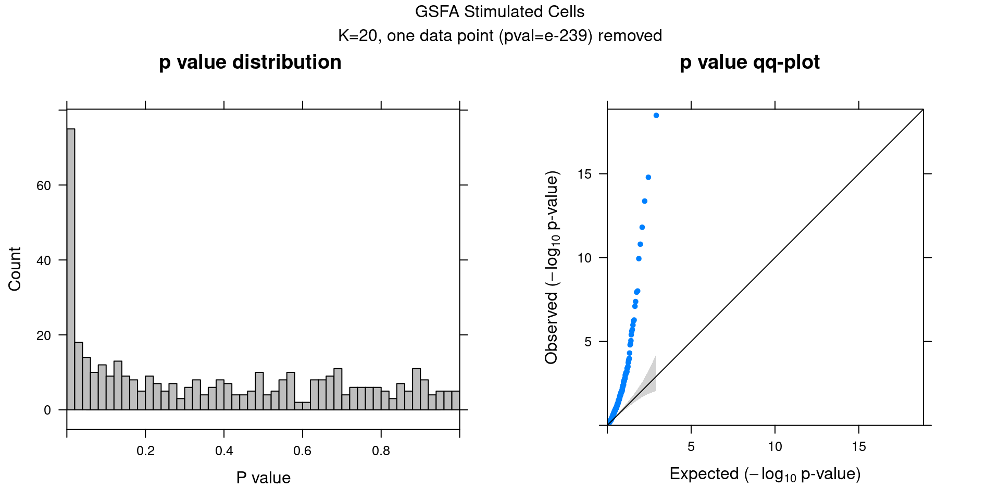
2.3.2 Unstimulated group
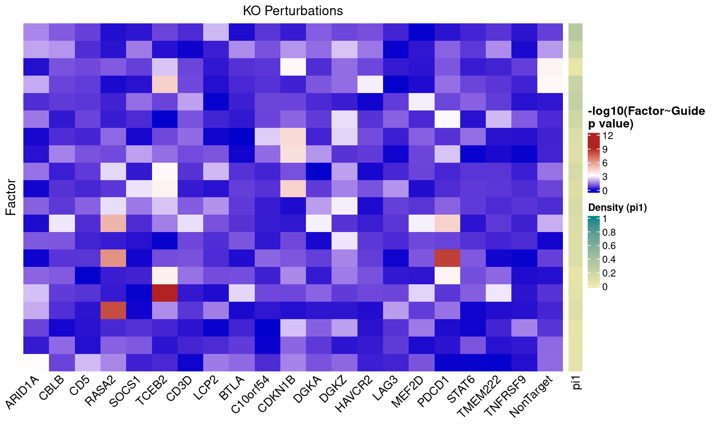Significant actor-guide associations:
4 - TCEB2; 7 - CDKN1B; 10 - CDKN1B; 12 - PDCD1,RASA2; 14 - PDCD1,RASA2; 16 - TCEB2; 17 - RASA2
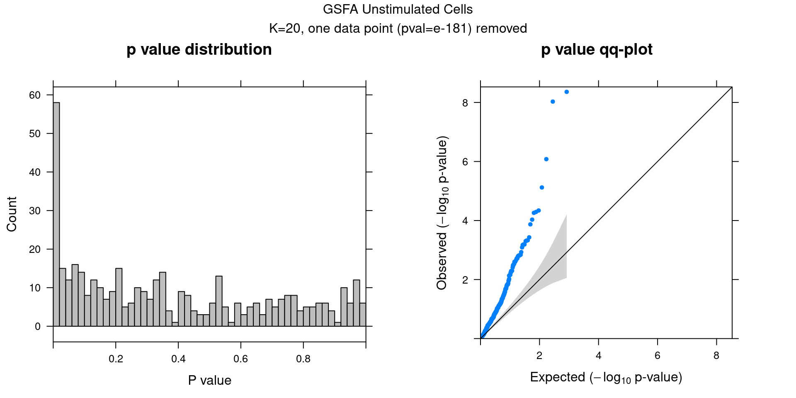
2.4 Beta PIP vs P-Value
2.4.1 Stimulated group
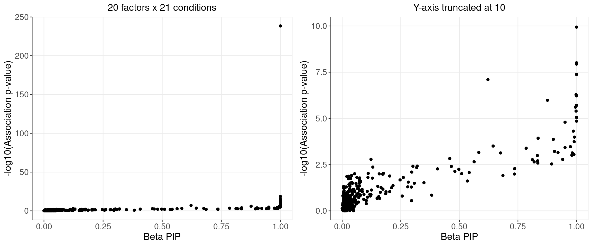
2.4.2 Unstimulated group
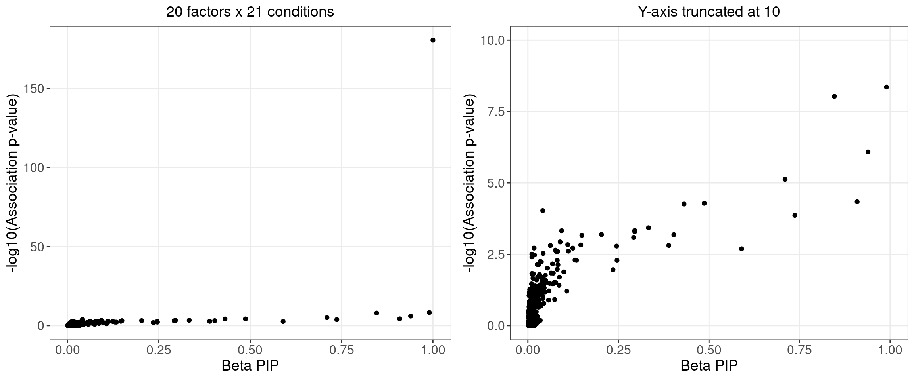
2.5 Correlation within factors
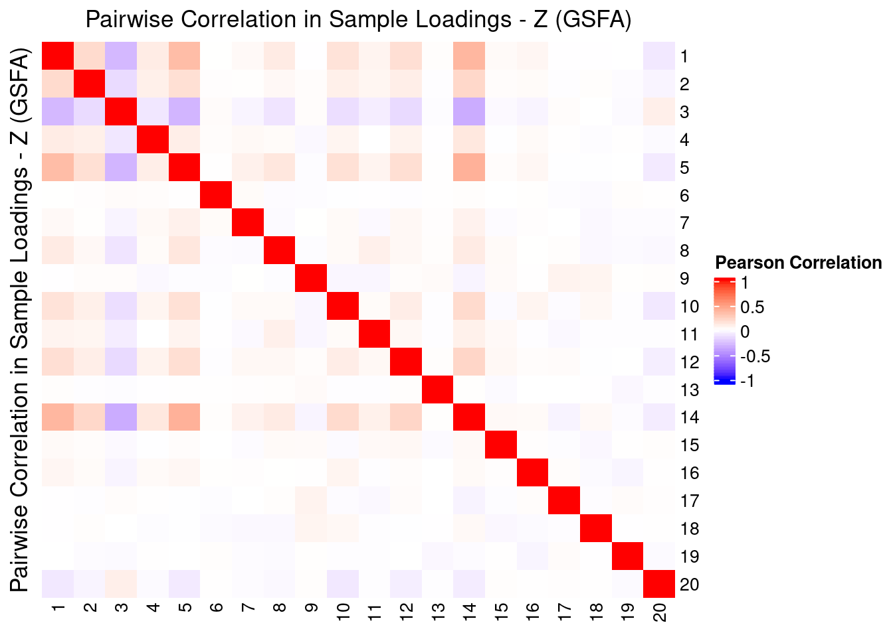
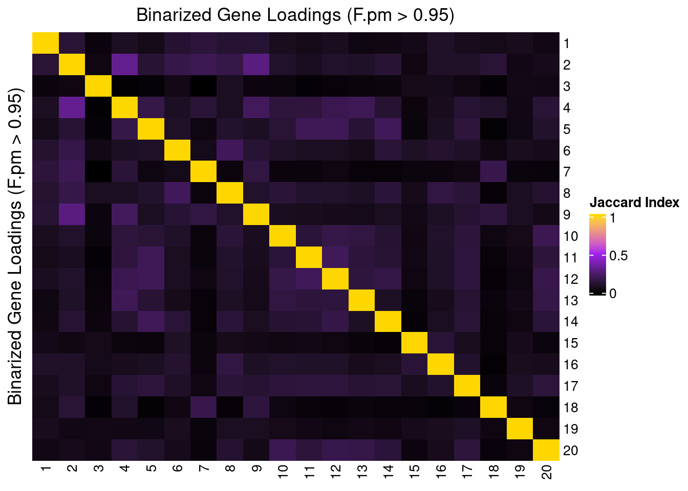
3 Factor Visualization on UMAP
3.1 UMAP representation by donor and stimulation conditions
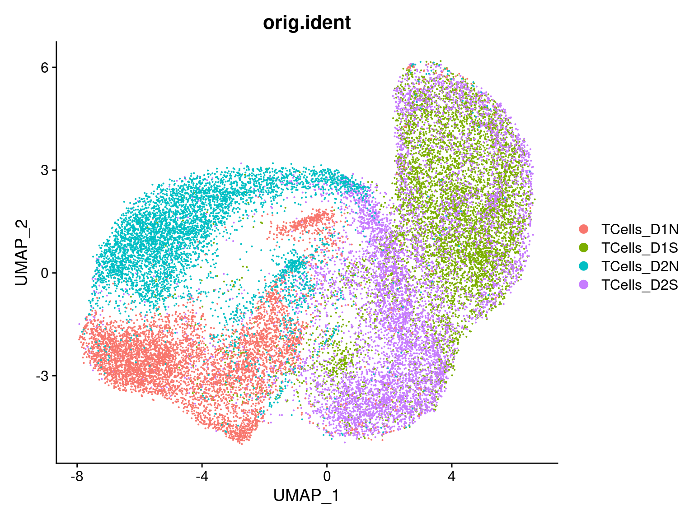
3.2 UMAP representation by GSFA Factors (Z)
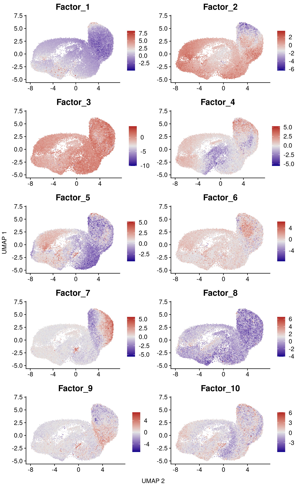
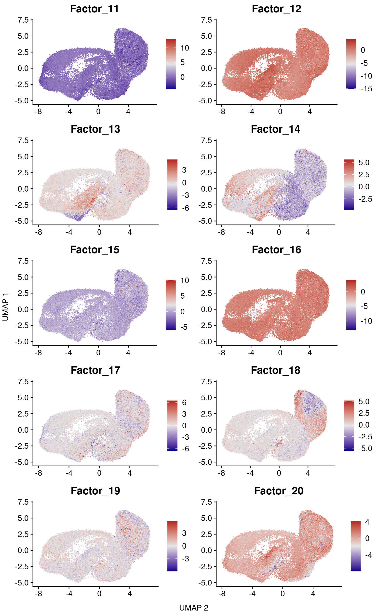
4 T cell gene markers
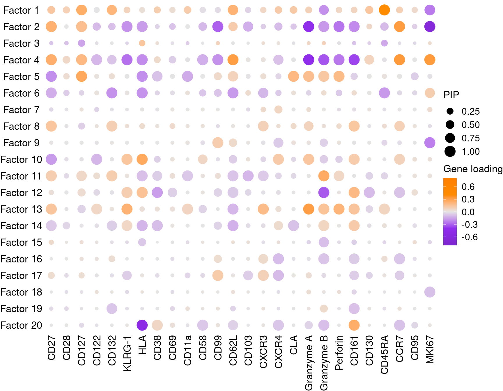